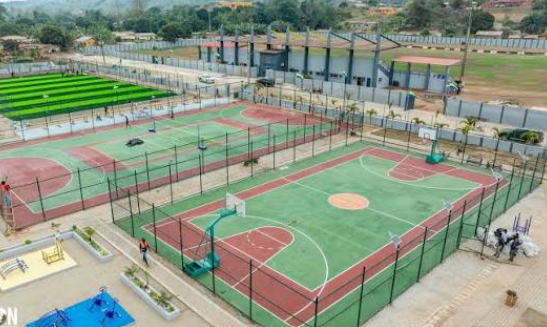

Sénégal
Pays hôte des Jeux Olympiques de la Jeunesse Dakar 2026, le Sénégal est le cœur battant de Sport Sans Barrières. C'est depuis Dakar que le programme est coordonné, et c'est ici que convergera l'héritage olympique en juillet 2026.
Le Sénégal, épicentre du programme
En accueillant les JOJ 2026, le Sénégal s'est engagé à construire un héritage inclusif durable. Sport Sans Barrières s'inscrit directement dans cet engagement : chaque jeune sénégalais en situation de handicap qui intègre le programme est une pierre de cet héritage.
Le contexte sénégalais est porteur : un tissu associatif actif, des fédérations sportives dynamiques et une jeunesse nombreuse et engagée. Le programme s'appuie sur ces forces tout en comblant les lacunes en matière d'accessibilité et d'inclusion.

Activités au Sénégal
Ce que le programme déploie concrètement sur le terrain.
Para-athlétisme
Sessions hebdomadaires au stade Léopold Sédar Senghor avec l'équipe nationale para-athlétisme.
RéaliséNatation adaptée
Initiation à la natation adaptée dans les piscines olympiques de Dakar.
RéaliséProgramme Leadership
Formation de 25 jeunes leaders sénégalais en gestion de projet et prise de parole.
En coursForum JOJ 2026
Forum régional Sport, Handicap & Inclusion lors des Jeux Olympiques de la Jeunesse.
À venirOrientation numérique
Orientations vers des formations certifiantes en cybersécurité accessibles.
En coursRéseau alumni
Création du réseau alumni régional post-programme.
À venir